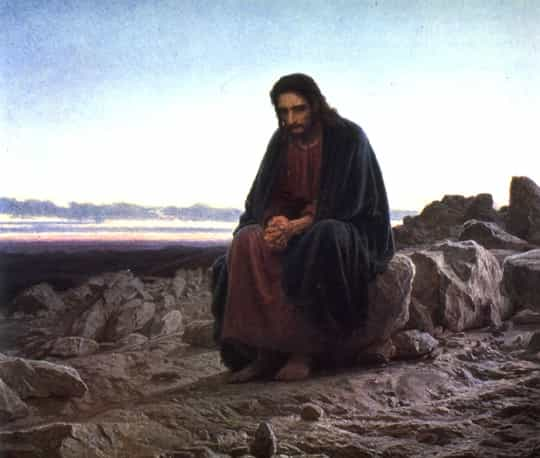

William is a young Yankee from the Deep South who keeps himself occupied by surfing the internet from his mom's basement. He is an aspiring organic soy bean farmer.


As any student knows, we are now approaching the hardest part of the year—that miserable limbo between winter and spring. Work and school become drudgeries, the weather is neither warm nor cold, and ground is covered in half-melted ice and snow.
The feeling is peculiar—a kind of suffocating lethargy that is unique to February and March. The human race (in northern regions, anyway) seems to think in unison, “We’ve had enough of this damned winter. Just get it over with already.”
But that’s not it. A certain group of people have even another “misery” added to their late winter: liturgical Christians. Yes, my friends, it is indeed that time of year again when Lent approaches. Good high church families spend the earlier parts of this week desperately trying to eat up all the meat in the house before Ash Wednesday, when the fast begins[1].
However, for those who are unfamiliar with Lent, let this quote enlighten you:
“Lent is a solemn religious observance in the liturgical calendar of many Christian denominations that begins on Ash Wednesday [February 18, 2015] and covers a period of approximately six weeks before Easter Sunday [April 5, 2015]. The traditional purpose of Lent is the preparation of the believer through prayer, penance, repentance of sins, almsgiving, atonement and self-denial. This event, along with its pious customs is observed by Christians in the Anglican, Calvinist, Lutheran, Methodist, and Roman Catholic traditions. Today, some Anabaptist and evangelical churches also observe the Lenten season.” (Wikipedia)
To get more specific, the most noticeable feature of Lent is that those who faithfully observe it refrain from eating the flesh of mammals and birds on Fridays. It is also customary to spend these (approximately) 40 days trying even harder than before to eliminate vices from your life.
“Well,” you say, “This is nothing but one of those stupid Christian traditions. What the hell are you talking to us about this for? Does it have any applications to kino escalation?” This is a very good question to ask. I submit to you, brothers, that any man serious about improving himself should observe Lent, not for religious reasons (unless you want to), but rather for the reasons I will mention here.
In order accomplish anything worthwhile, you must have a delayed time preference. What does this mean? It means that you are willing to sacrifice pleasure right now for the promise of future reward. This concept is central to understanding how to find fulfillment in life. In almost every religion, self-denial is a central concept—the idea of limiting pleasure in earthly life to experience heavenly pleasures in their fullest.
Self-discipline is the primal struggle of suppressing your biological instincts and doing what you rationally know is best for you. It is quite literally taming the animal inside of you. Lent can help you do just that.
By setting aside a certain amount of time (around 40 days in this case) to focus on denying your base desires and cultivating your rationality and your soul, you are going into “monk mode.” You are living life for a short time with as few distractions as possible in order to cultivate your character and focus on conquering the pet vices you hold.
The obvious objection to this reason is, “Well shouldn’t we be doing that all the time?” The answer to that is “yes.” However, during Lent, you should buckle down on yourself even more and really push yourself to the limits. To use bodybuilding terms, Lent is “progressive overload” for the whole man. You already don’t masturbate? Try going without any kind of sexual release during Lent. You already read a book a week? Read two.

This particular point falls under the assumption that all of you readers work out regularly. During Lent, you are not allowed to eat any mammal or bird meat on Fridays. This presents a problem for bodybuilders, who need to eat 10 chickens every day plus half of a cow and a huge scoop of ridiculously overpriced protein powder. You don’t want to wreck your diet by not getting enough protein on Fridays, so what do you do? How do you get your protein?
That’s for you to decide. Find ways to innovate. Discover new foods you never knew of before. Eat more fish. Discover the wonders of legumes. If it really is impossible for you to get all the protein you need on a Lenten diet and you don’t want to just eat at maintenance, keep on eating meat, but make sure you abstain from something else that is dear to you. I guarantee, however, that you can find a way to make it work if you try hard enough. After all, it’s just one day a week.
Your ancestors scratched a living from dirt. They dug up roots they had never seen before. They started farming. They adapted to their circumstances. And you’re going to whine and moan about not having some pre-slaughtered meat.
Learning to love everyday things is cliché, but so important if you want to be a truly joyful man. Allow me a moment of sappiness, gentlemen. To be able to take a walk and glory and nature is one of the most wonderful joys a man can possess. To delight in the taste of a strawberry, or breathe in the salty air of the seashore, or enjoy the endorphin high after a good workout—all of these things are what make life worth living.
If you can only find pleasure in the ecstasy of sex, or the false sense of accomplishment from a video game, or the savory flavors of fine cooked meal and not the simple smile of a little girl, the satisfaction of a job well done, or the simple sweetness of an apple, you are not living life to the fullest.
We take so many things for granted. Lent strips away the excesses of life and forces us to realize the beauty in the mundane. Once you choose to habitually refrain from meat, you begin to understand that tomatoes actually taste pretty good in their glorious simplicity. Then, once the pleasures we forsook are restored, we enjoy them even more than we did before. That ham on Easter tastes a lot better than that steak you used to eat every night before.
There are some simple rules when observing Lent, according to Christian tradition. The first is that you observe a full fast from all food besides water on Ash Wednesday (February 18) and Good Friday (April 3). On regular days, you should be careful to eat the meat of mammals and birds sparingly (though Anglicans and Orthodox refraining from eating it all together).
If you are feeling really motivated, don’t eat any dairy products or eggs on Fridays, either, though this probably isn’t realistic for someone looking to continue their bulking during Lent.
In addition to observing the fast from meat on Fridays, you should devote this time of the year to developing any skills you want to and eliminating any vices in your life. I will use my own plan as an example. I am trying not to masturbate or use the internet excessively during Lent, and I am trying to practice the guitar every day, read more, and get more writing done.
Just remember, the goal of Lent is to make you into a better man. Follow this advice, and I guarantee you won’t regret it.
Hope you like fish.
[1] Incidentally, this is where Mardi Gras comes from. It literally translates into “Fat Tuesday,” and it originally started as the night when people partied it up and glutted out before fasting the next day.
Read More: Dostoyevsky And The Narcissistic Roots Of Insecurity
{kind=link}